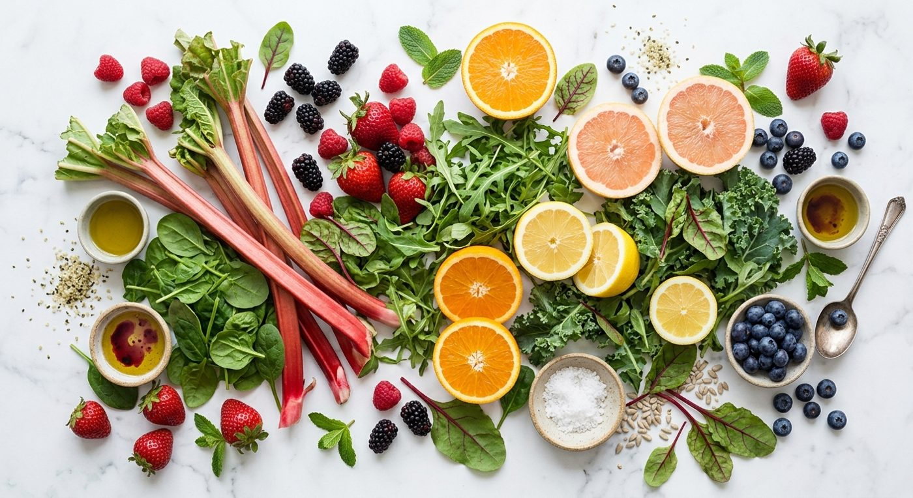

Welcome & How This Works
WhenPrep Day 1
Welcome! We’re so glad you’re here, and we’re excited for the journey you’re starting today and for the results it’s going to bring you.
Over the next several weeks you’ll calm your system, give your body the space it needs to heal, and discover exactly which foods work for you and which ones don’t.
How it’s going to go
- Prep Week — you’ll learn what drives inflammation, clear out your kitchen and stock up, so Day 1 feels easy.
- Elimination (30+ days) — you’ll eat only Yes foods and log how you feel while your body calms down.
- Reintroduction — you’ll bring foods back one at a time to find your exact triggers.
- Personalize — you’ll build the way of eating that’s right for your body.
The more you stick to it, the better your results
This protocol works because it’s clean. Every “just this once” makes it harder for your body to settle and harder to read your results. The more fully you follow it, the clearer your answers and the bigger the change you’ll feel.
This isn’t forever
This is not meant to be a permanent diet. It’s a reset that lets your system calm down and heal. Afterward you’ll still want to eat better than you may have been before, but you’ll do it with something most people never have: a clear map of your own triggers. That knowledge helps keep your symptoms from flaring in the future and lets your body run the way it was designed to.
Let’s get started.
This guide walks you through the Autoimmune / Elimination protocol one lesson at a time.
- Each lesson has a time frame — for example “Prep Day 1” or “Elimination Days 2–7.” That’s when to do it.
- You learn first. Most of the learning happens in prep week and the first two weeks of elimination. After that, your main job is eating well and logging your food and symptoms.
- Every lesson ends with your action list. Check off each action when it’s done. The lesson is complete once everything is checked, so you may come back to finish it later in the day.
- Printables are built in. Each lesson has print buttons for the checklists and trackers you need right then.
- The Toolkit at the bottom of the menu holds your food lists, meal ideas, snacks, recipes and every printable, any time you need them.

This diet focuses on non-processed, natural and organic food sources — foods that would have been accessible to humans living off the land and farming their own food. Clean grass-fed, pasture-raised meats, wild fish, vegetables, fruit and berries.
It is our most focused protocol. It starts from the Anti-Inflammatory Diet and goes one step further: for a set period of time we also remove the foods that are most likely to provoke the immune system or irritate the gut in people with autoimmune conditions or stubborn symptoms — nightshades, eggs, nuts, seeds, seed spices, legumes, erythritol, chocolate and coffee. Then we bring them back one at a time to learn exactly which ones your body does and doesn’t tolerate.
Changing your diet can feel overwhelming. The goal is not perfection — it is to drastically reduce the load on your body and eat foods that nourish and restore balance to your digestive, nervous and immune systems.
Why an elimination diet?
Food reactions are rarely obvious. Many don’t show up as hives or an upset stomach within minutes — they show up as joint pain the next day, brain fog, fatigue, a skin flare, poor sleep or bloating two days later. When you eat a dozen different foods a day, it is impossible to tell which one is responsible.
An elimination diet solves that problem the same way a good experiment does: remove the variables, let the body calm down and establish a clean baseline, then test one variable at a time. Lab tests for food sensitivities can be a helpful clue, but a careful elimination and reintroduction remains the most direct way to see how your body responds to a food.
This protocol happens in four phases, in a set order. Each phase has its own job, and skipping ahead is the most common reason people don’t get clear answers about their triggers.
- Prepare — set yourself up so Day 1 isn’t overwhelming.
- Eliminate — remove every likely trigger at once so your body can calm down and you can see your true baseline.
- Reintroduce — test foods one at a time to learn exactly which ones affect you.
- Personalize — turn what you learned into the way you eat long term.
Plan on about a week to prepare, at least 30 days of elimination, then several weeks to a few months of reintroduction, since each food takes 3–5 days to test. Now let’s walk through each phase and exactly what you’ll do in it.
Prepare
- Work through Lessons 1–6 before you start
- Clear your pantry of No foods
- Stock up on Yes foods
- Print your trackers
- Fill in the Symptom Questionnaire before Day 1 so you have something to compare against
- If you drink coffee, wean down over the week before you start to avoid withdrawal headaches
Eliminate
- Eat only Yes foods for a minimum of 30 days
- Log your meals every day
- Rate your symptoms every evening
- No significant improvement by day 30? Stay in this phase longer
- You’re undoing years of damage — give it time
Reintroduce
- Bring foods back one at a time
- Wait 3–4 days between each food so delayed reactions have time to show
- Follow the step-by-step testing in Lessons 12 and 13
Personalize
- Keep the foods you tolerate
- Avoid the foods that trigger you
- Retest failed foods in 3–6 months as your gut heals
- The goal: the widest, most nourishing diet your body thrives on
Food reactions aren’t always obvious. Use this guide to know what to notice, then score it honestly.
What to watch for
Digestion — bloating, gas, belching, reflux or heartburn, nausea, cramping, constipation, diarrhea or urgency, changes in your bowel movements
Joints & muscles — pain, stiffness (especially in the morning), swelling, aches, weakness
Energy & brain — fatigue, an energy crash after meals, brain fog, poor focus, trouble finding words, dizziness
Mood & sleep — anxiety, irritability, low mood, trouble falling or staying asleep, waking unrefreshed
Skin — rashes, eczema, acne, itching, hives, flushing, psoriasis flares
Head, sinus & mouth — headaches or migraines, congestion, sneezing, post-nasal drip, itchy mouth or throat, mouth sores, ringing ears
Heart & fluid — racing heart after eating, puffiness, water retention (rings or socks feel tight)
Cravings & appetite — strong cravings, never feeling full
Timing
- Some reactions show up within minutes. Many take 24–72 hours. That’s why you score every day, not just after meals.
Adjustment symptoms in the first week
- Headaches, tiredness, irritability and cravings around Days 2–7 are usually your body coming off sugar and caffeine, not a food reaction. They typically ease by Days 7–10. Drink water with a pinch of sea salt, eat enough protein and rest.
Add your own condition’s symptoms
- Thyroid (Hashimoto’s): cold hands and feet, hair shedding, dry skin, puffiness
- Rheumatoid arthritis: minutes of morning stiffness, number of swollen joints
- Psoriasis or eczema: size of the flare, itch level
- IBD or IBS: number of bowel movements, urgency
- Lupus: joint pain, rash, fatigue · MS: fatigue, numbness or tingling
How to score
- 1 = no symptoms · 10 = the worst you can imagine.
- Score at the same times each day and compare against your own scores, not how you think you should feel.
- Write down anything unusual — a new symptom counts too.
Your actions
Check off each action as you finish it. This lesson is complete when every action is checked — you can come back later to finish.